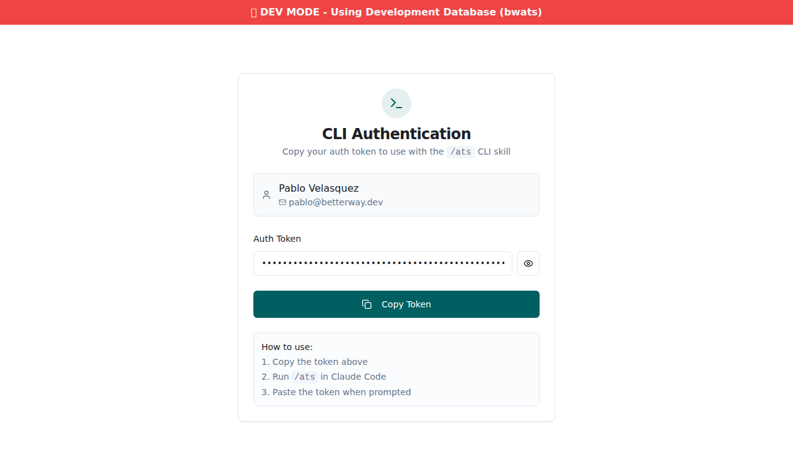
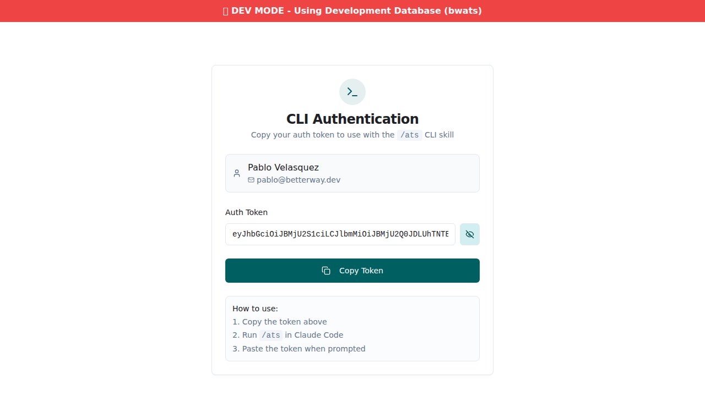
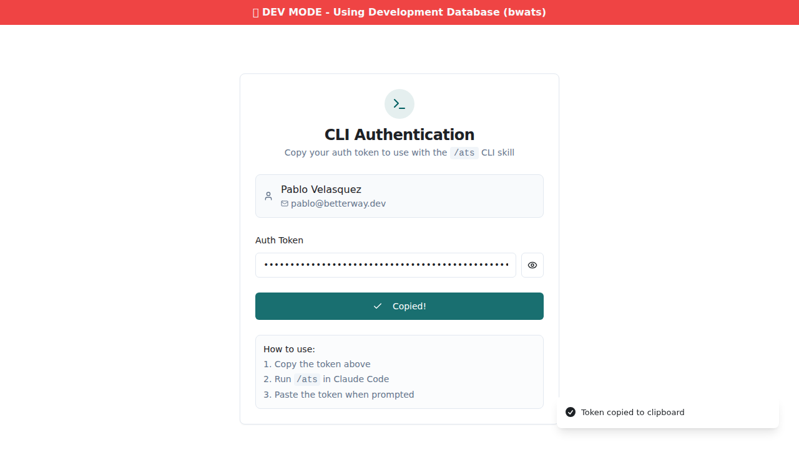

All acceptance criteria passed
5 Playwright tests executed. 4 acceptance criteria verified. 4 screenshots captured.
Acceptance Criteria
AC1 — Page renders at /cli-token
The route /cli-token loads correctly when authenticated. The page displays the
"CLI Authentication" heading, the user's email (pablo@betterway.dev), a masked auth token input,
a "Copy Token" button, and a "How to use" instruction block.
AC2 — Unauthenticated access redirects to /login
Navigating to /cli-token without an active session immediately redirects to
/login. The ProtectedRoute wrapper is functioning correctly. After
logging in the user would return to the intended page (standard redirect flow confirmed via
auth setup test).
AC3 — Token display, show/hide toggle, and copy button
Token is initially masked as input[type="password"]. Clicking the eye button
(title="Show token") switches it to input[type="text"] and changes the button title
to "Hide token". The reverse toggle also works. The Copy Token button clicks successfully and the
button label changes to "Copied!" with a toast notification, confirming clipboard interaction.
AC4 — No navigation link (utility page)
The /cli-token page is intentionally a utility page with no sidebar navigation link.
It is accessed directly via URL (e.g., from a Claude Code skill prompt). This design was confirmed
by reviewing the component — it renders a standalone centered card with no nav wrapping.
Test Run Detail
| # | Test Name | Duration | Result |
|---|---|---|---|
| 1 | auth setup (shared auth.setup.ts) | 3.3s | PASS |
| 2 | page renders with CLI Authentication heading, user email, masked token, copy button, and instructions | 5.3s | PASS |
| 3 | show/hide token toggle works | 6.3s | PASS |
| 4 | copy token button shows copied feedback | 5.7s | PASS |
| 5 | unauthenticated user is redirected to login | 4.1s | PASS |
Screenshots


